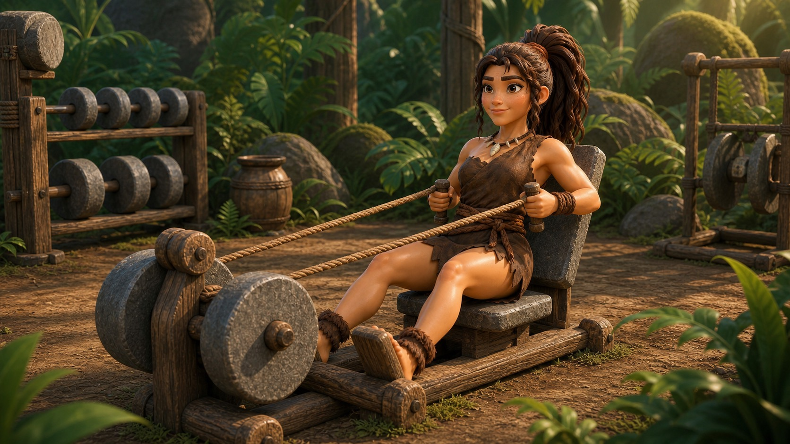

A joint-friendly starter plan built around confidence, control, and repeatable wins.
Best forLow-impact startsSchedule2-3 days / weekGoalCapacity and confidence
Start with patterns that are easy to scale and easy to recover from.
If you are starting from a higher body weight, the goal is not to punish yourself into fitness. The goal is to build joints, lungs, muscles, and confidence at the same time.
This plan keeps impact low, uses stable positions, and gives you several ways to scale up without making every session feel like a test.
Safety noteStop for pain, dizziness, or unusual shortness of breath.
Safety Comes First
If you have pain, dizziness, chest symptoms, recent surgery, medical restrictions, or you are unsure what is safe for you, check with a clinician before starting. Training should feel challenging, not alarming.
How to Run the Plan
Do one round the first week. Add a second round only when the next day feels manageable. Rest as much as needed between moves.
Scalable moves
Low-Impact Starter Circuit
Lower body
Chair Sit-to-Stand
Build the squat pattern with a seat behind you for confidence and range control.
2-3 sets x 6-10 reps
Upper body
Wall Push-Up
Train pressing strength with a friendly angle and very low joint stress.
2-3 sets x 8-12 reps

Upper back
Seated Machine Row
Support the body while training the back muscles that help posture and pulling strength.
2-3 sets x 8-12 reps
Cardio
Recumbent Bike
Use seated cardio to build stamina without pounding joints.
6-12 easy minutes
Balance
Supported Step-Up
A low step builds single-leg confidence while a rail gives balance support.
2 sets x 5-8 / side
Full body
Farmer Carry
Loaded carries train grip, posture, breathing, and full-body coordination.
3 walks x 20-40 steps
Strength Circuit
Chair Sit-to-Stand2-3 sets x 6-10 reps
Wall Push-Up2-3 sets x 8-12 reps
Seated Machine Row2-3 sets x 8-12 reps
Conditioning and Carry Finisher
Recumbent Bike6-12 easy minutes
Supported Step-Up2 sets x 5-8 / side
Farmer Carry3 walks x 20-40 steps
Track Small Wins Without Guessing
Torq Tribe helps you repeat the right level, add reps gradually, and see progress without needing an extreme plan.